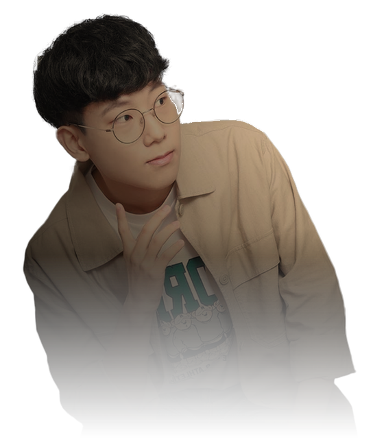
What is
going on?
세상의 모든 ‘왜?’에
불을 켭니다.
과학커뮤니케이터 와트
SCROLL TO SWITCH ON ↓
어떤 일로 찾아오셨나요?
강연·수업·교육 프로그램을 찾고 있어요 방송·영상 출연을 제안해요 행사를 기획하고 있어요
학교·기관 교육 담당자라면
교실의 질문을
꿈으로 잇습니다.
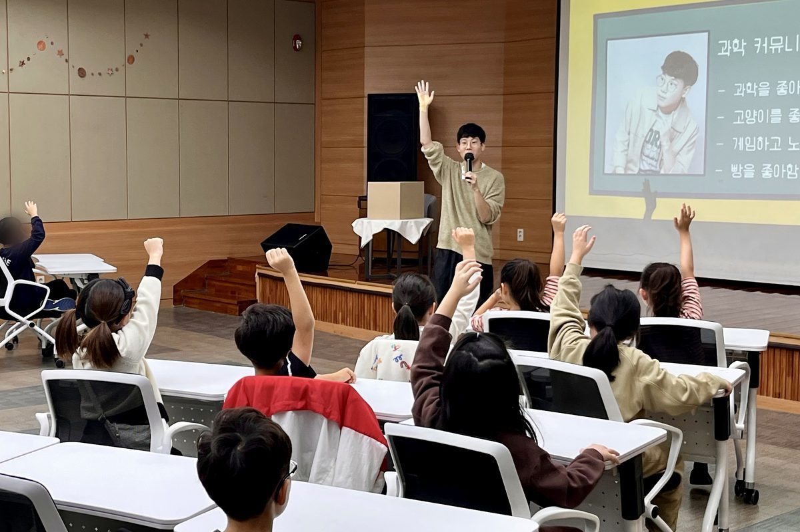
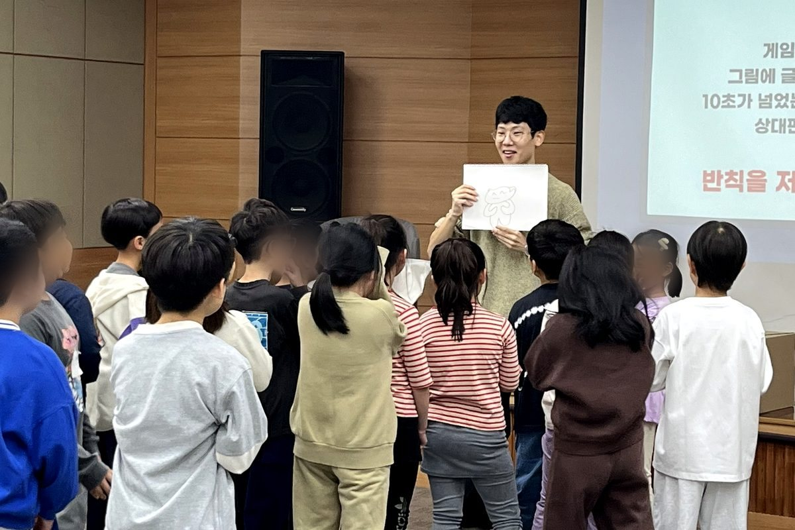
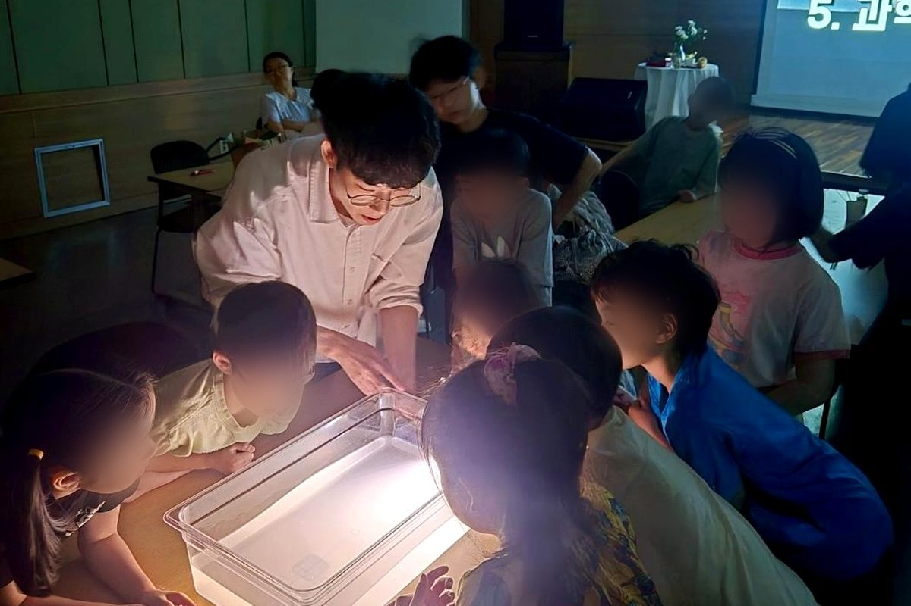
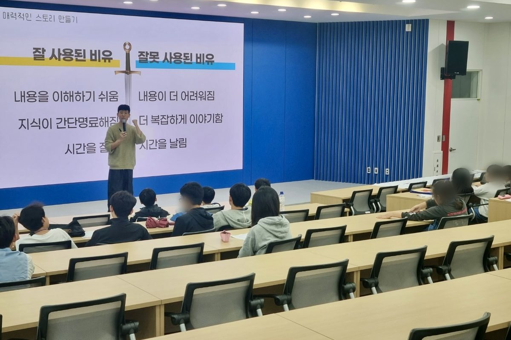
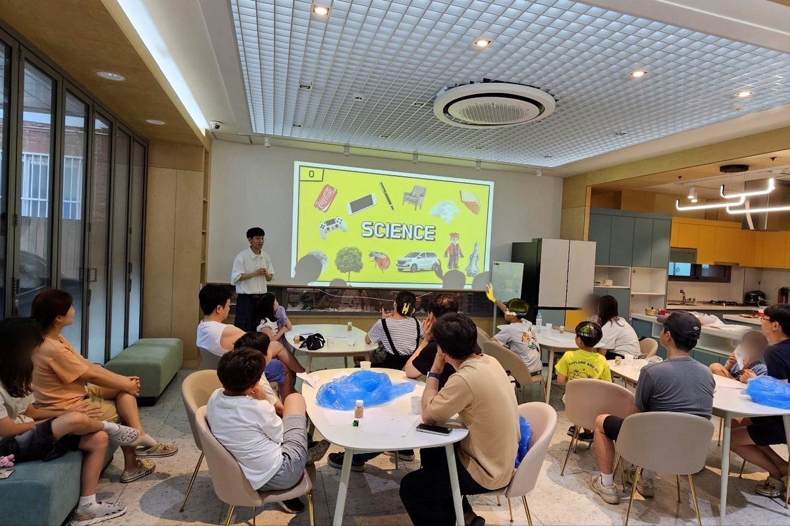
한 번의 강연부터 여러 회차의 수업, 교육 프로그램 기획과 운영까지. 어린이·청소년의 눈높이에 맞춘 과학 교육을 만들어 갑니다.
5
년째
과학 강연·교육 현장에서
강연 대회 수상
FameLab Korea 2021 국내 3위
영재교육원 강사
강원대학교 과학영재교육원 · 와이즈만 영재교육 심화과정
교육 프로그램 운영
영등포문화재단 어린이 과학 · NASA 유니버셜 리더 코스 · 꾸그
책으로도 만나요
<컵라면이 익을 동안 읽는 과학> 공저
PD·제작자라면
카메라 앞에서
더 선명해집니다.
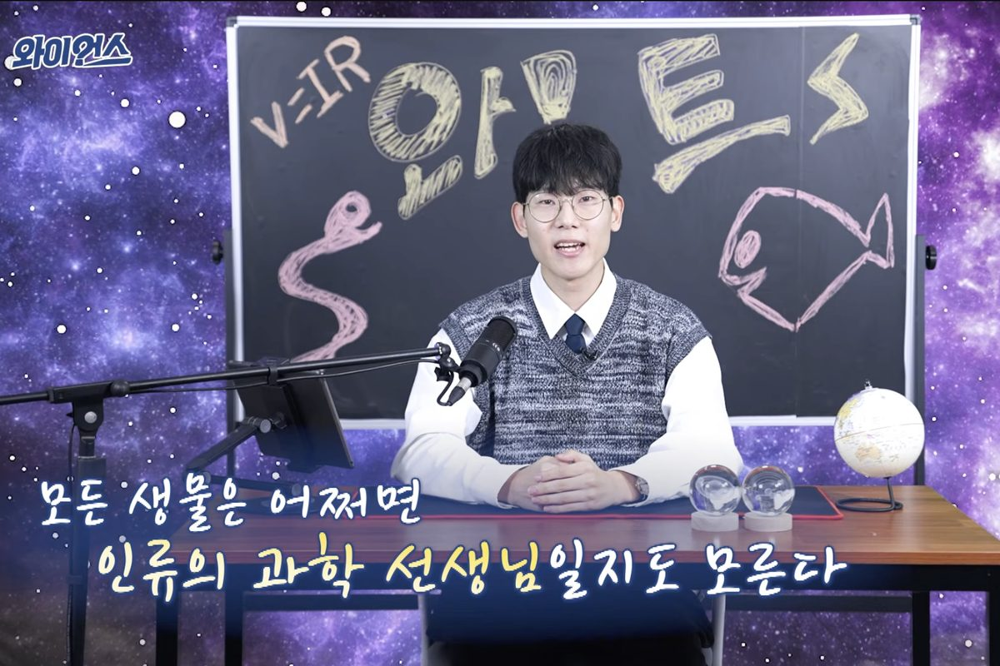
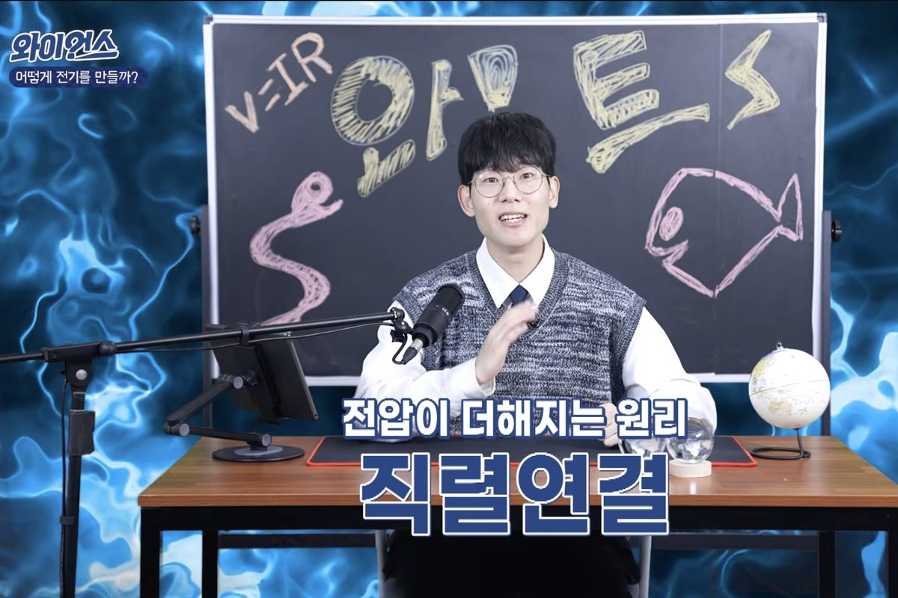
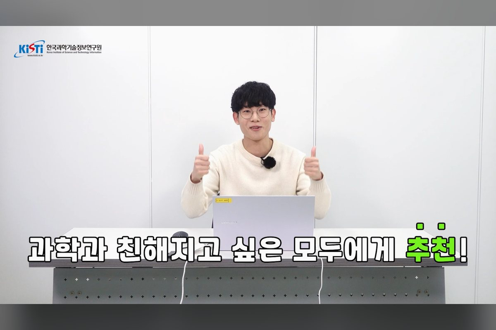
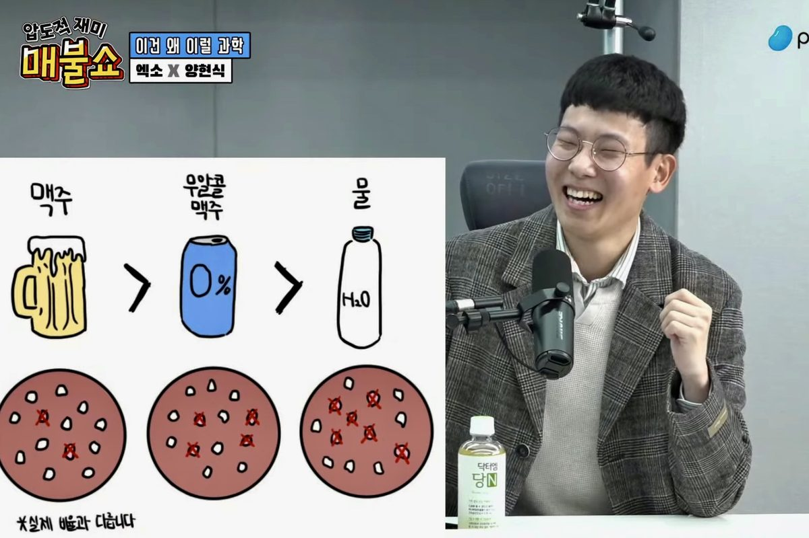
기획부터 출연, 진행까지. 방송사와 연구기관이 믿고 맡긴 과학 영상에 함께해 왔습니다.
1
위
8.22 Energy Film Festival · 국제 영상제
YTN 사이언스 <와이언스>
유튜브 과학 콘텐츠 꾸준히 출연 중
KISTI 영상 총괄
한국과학기술정보연구원 홍보 영상 제작
방송·라디오 출연
팟캐스트 <매불쇼> 과학 코너 · 라디오 <과학수다>
행사 기획자라면
무대를
실험실로 바꿉니다.
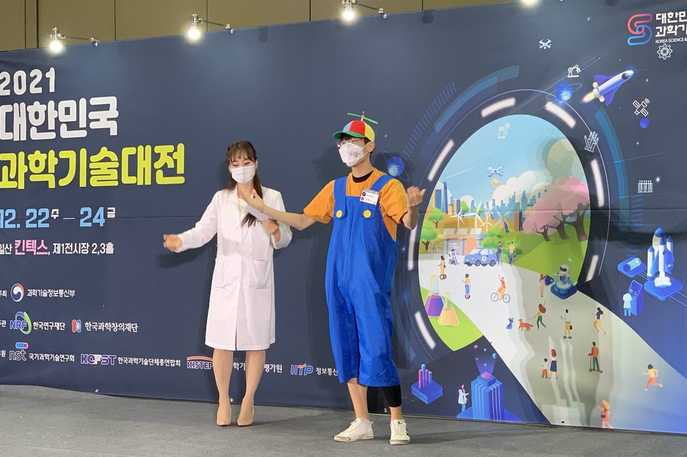
대중 강연부터 사이언스 버스킹, 과학 콘서트와 토크쇼 진행까지. 행사에 꼭 맞는 형식으로 설계합니다.
대한민국 과학기술대전
2021 과학 공연 무대
과기정통부 위촉
국가가 인정한 과학 커뮤니케이터
사이언스 버스킹 우수콘텐츠
2021 선정 · 쇼케이스 자문위원
콘서트도, 토크쇼도
<코딱지별 바이러스> · <궤도의 과학토크쇼> 진행
상세 이력 전체 보기
숭실대학교 전기공학부
FameLab Korea 2021 국내 3위
과학기술정보통신부 위촉 과학 커뮤니케이터
8.22 Energy Film Festival 국제 1위
2021 사이언스 버스킹 우수콘텐츠 선정 및 쇼케이스 자문위원
2021 대한민국 과학기술대전 과학 공연
서울포럼 2021 부대행사 '유스포럼' 심사위원
2021 서울 스마트시티 위크(SSW) 인사이트 연사
YTN 사이언스 유튜브 <와이언스> 비정기 출연
팟캐스트 <매불쇼> 과학 코너 비정기 출연
과학 콘서트 <코딱지별 바이러스> 퍼포먼스 진행
와이즈만 영재교육 심화과정 강사
북 콘서트 <궤도의 과학토크쇼> 진행
과학 라디오 <과학수다> 출연 및 간행물 저
과학 교양서 <컵라면이 익을 동안 읽는 과학> 공저
영등포문화재단 어린이 과학 프로그램 강사
D.NAV NASA 유니버셜 리더 코스 강사
초등교육 플랫폼 '꾸그' 과학 강사
KISTI(한국과학기술정보연구원) 홍보 영상 제작 총괄
강원대학교 과학영재교육원 과학 소통 과정 강사
국립과천과학관 창작스튜디오 <창작도약 프로그램> 강사
What is going on? — Watt